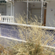

Experiencia única
Siéntete como un ganador de "Un, Dos, Tres": nosotros tenemos los apartamentos del premio gordo.

Siéntete como un ganador de "Un, Dos, Tres": nosotros tenemos los apartamentos del premio gordo.
Sólo preocúpate de relajarte en las hermosas playas del municipio.
La urbanización cuenta con vigilante las 24 horas del día. Nadie te molestará en tu descanso.
Los antiguos dueños los vendieron masivamente, ¡y Apartamentos Tripi los ha comprado para ponerlos a tu disposición! Contamos con 20 casas prefabricadas ubicadas en una de las urbanizaciones más famosas de toda España. Se trata de bungalows de 50 m2, todos de planta baja y sin escaleras, ideal para pasar el día en la playa y de turismo sin preocuparse de las labores cotidianas.
El vecindario es acogedor y agradable, y cuenta con vigilancia constante para que no tengas que preocuparte por nada más allá de quitarte la arena de la playa. La zona de bares está retirada, lo que da una tranquilidad a la urbanización que te asegurará un descanso en paz y silencio. ¡Sin duda serán unas vacaciones de cine!
La urbanización carece de piscina, pista de pádel y aparcamiento, ya que son apartamentos prefabricados de los años 70. Sin embargo, la playa está muy bien.